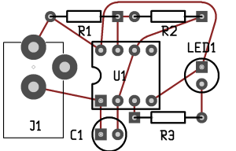
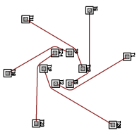

Overview
This project was undertaken as part of the Google Summer of Code, and is mentored by DJ Delorie. The goal is to create a topological autorouter for PCB, a printed circuit board layout program. PCB is part of the gEDA suite of open source electronic design automation tools.
Perhaps one of the biggest advantages commercial PCB layout tools has over open source tools such as "PCB", is the autorouter capability.
Tools incorporating topological autorouters produce results of a higher quality and can solve a larger range of routing problems compared to
geometric sequential maze routers, such as that currently found in "PCB". It is currently implemented as a plugin to PCB. Ultimitely it
would be nice to integrate it back into PCB once it achieves a good level of functionality.
The advantages of a topological autorouter arise from the flexible and abstract representation of nets and terminals in a structure such as
the rubber-band sketch. During the routing process manipulation is performed on this more flexible format, and the exact geometric
representation of the nets is delayed until the latest possible moment. In contrast, sequential maze autorouters maintain a geometric
representation of the nets and terminals on a grid system throughout the routing process, requiring comparitively high computational
resources and producing generally lacking results.
Most of this work is influenced by "Rubberband based topological router", a PhD thesis by Tal Dayan, and a few other papers mentioned in the
bibliography.
Status
The topological router is still in development. Here are some samples of the output:


Current features:
- Data is imported from PCB into internal data structures.
- Computation of a forest of EMST (euclidean minimum spanning tree) for each netlist.
- Division of n-layer problem into smaller n-layer subproblems based on flow density of topology edges between cuts.
- Assignment of 2-nets (edges of the topology) to layers within the subproblem (referred to as the 2-net layer assignment algorithm, or
2LAA). A 2-net may further be decomposed into 2-nets residing on different layers, and a via placed. The 2LAA also avoids closed sets of
nets which will cause an impossible situation at later stages. A heuristic for wiring detour and
cost function for via placement are the main parameters affecting the quality of results. The result of the 2LAA is a set of set problems
for each layer.
- The topological net ordering algorithm solves the net ordering problem (NOP). The order in which a layer problems set of nets are
routed can change the wiring cost, and also affects planarity. Routing a closed net prior to a net with terminals either side of the
closed net will cause an impossible routing situation. The NOP orders the nets such wiring cost is minimized, and a planarity enforcement
operator (PEO) guarentees the local router can succeed without backtracking.
- A triangulation crossing sketch (TCS) is generated used the A* path search algorithm.
- A ROAR (rip-up and re-reroute) operator is applied to detect and reroute situations of circular dependencies, where a 2-net routed
with the shortest path algorithm can block the optimal solution. E.g., the "triangle problem" before and after ROAR, and the current autorouters results for the same problem. This also works with a greater number of 2-nets in
circular conflict, e.g., a hexagon problem with the toporouter and with the old autorouter
autorouter. In this case the old autorouters solution isn’t that bad because it
couldn’t route a shortest path in the first place while under orthoganal constraints.
- Another ROAR operator is applied to fix traces travelling adjacent to points from the same net, due to unforeseen detour and topology
decisions made earlier on. For every TCS edge e, if there is a point p on that edge belonging to the same netlist as the end points of e
(p1 and p2), then a route is tested from either p1 or p2 (depending on which belongs in the other cluster compared to p if edge e is
removed) to p, and if its shorter, it is used instead. This tends to appear on boards constrained to few layers which forces large
detours. E.g., the tutorial board before this ROAR operator, and after
- Force-driven wiring optimization is applied to the TCS.
- The TCS is converted to a rubberband representation consisting of arcs and edges, and exported back into PCB.
Future work:
- Import of all geometry from PCB, as constrained edges in the triangulations. This is required to route boards with existing
geometry, or the pads for SMT boards.
- Support for planes and polygons.
- Heuristic for high-density device fanout.
- Heuristic for handling large conflict in small area (e.g., a bus inverting).
- Support for other topologies such as force-driven, constrained minimum steiner tree.
Downloads
Source code (.tar.gz)
Bibliography
- Dayan, T. and Dai, W.W.M., "Layer Assignment for a Rubber Band Router" Tech
Report UCSC-CRL-92-50, Univ. of California, Santa Cruz, 1992.
- Dai, W.W.M and Dayan, T. and Staepelaere, D., "Topological Routing in SURF:
Generating a Rubber-Band Sketch" Proc. 28th ACM/IEEE Design Automation
Conference, 1991, pp. 39-44.
- David Staepelaere, Jeffrey Jue, Tal Dayan, Wayne Wei-Ming Dai, "SURF:
Rubber-Band Routing System for Multichip Modules," IEEE Design and Test of
Computers ,vol. 10, no. 4, pp. 18-26, October/December, 1993.
- Dayan, T., "Rubber-band based topological router" PhD Thesis, Univ. of
California, Santa Cruz, 1997.
- David Staepelaere, "Geometric transformations for a rubber-band sketch"
Master's thesis, Univ. of California, Santa Cruz, September 1992.
- Geoff Leach. Improving worst-case optimal Delaunay triangulation algorithms.
In 4th Canadian Conference on Computational Geometry, 1992.
- Guibas, L. and Stolfi, J. 1985. Primitives for the manipulation of general
subdivisions and the computation of Voronoi. ACM Trans. Graph. 4, 2 (Apr.
1985), 74-123.
- Also implemented in this file is Euclidean minimum spanning tree, computed
as a subset of the Delaunay triangulation in O(n) time, using Kruskal's
algorithm:
- Joseph. B. Kruskal: On the Shortest Spanning Subtree of a Graph and the
Traveling Salesman Problem. In: Proceedings of the American Mathematical
Society, Vol 7, No. 1 (Feb, 1956), pp. 48–50.
- De Berg, M. and van Kreveld, M. and Overmars, M. and Schwarzkopf, O.
"Computational geometry: Algorithms and applications", 2000,
Springer-Verlag.
{kind=link}
{kind=link}
{kind=link}
{kind=link}
{kind=link}
{kind=link}
{kind=link}